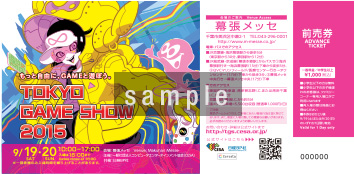
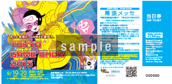
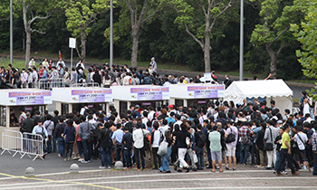
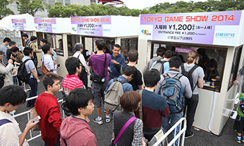
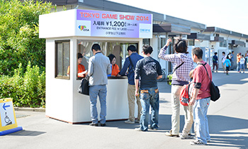

![TOKYO GAME SHOW 2015
Business Day 2015.9.17[Thu]-18[Fri] Public Day 2015.9.19[Sat]-20[Sun] @ Makuhari Messe](../../common/images/maintitle_en.png)

![Business Day 2015.9.17[Thu]-18[Fri] Public Day 2015.9.19[Sat]-20[Sun] @ Makuhari Messe](../../common/images/sp_date_en.png)
The first visit to TGS -Public Day Version-

We recommend that you get an idea of the look and feel of Tokyo Game Show 2015 (TGS2015) in advance. Photos from TGS2014 are included to help you form a mental picture. Please note, however, that there will be some differences between TGS2015 and TGS2014, so the photos are for reference purposes only.
Ticket
There are different kinds of ticket to attend TGS2015 on Public Day. One is DAY TICKET which you can buy at the venue (children in the junior high school and above - 1,200JPY). Another is the 「ADVANCE TICKET」(children in the junior high school and above - 1,000JPY). There is also a 「TGS2015 Supporters Club Ticket 」which is a limited ticket with special benefits (3,000 JPY). TGS2015 Supporters Club Ticket is sold out for now.

「ADVANCE TICKET」（children in the junior high school and above - 1,000JPY）

「DAY TICKET」（children in the junior high school and above - 1,200JPY）
If you plan to participate in either of the live events listed below, please note that there will be two kinds of admission tickets to the live events—one that comes with a general admission ticket to TGS2015, and one that only offers admission to the event.
- ●September 19 (Sat.):「Milky Holmes Aki no Dai Undoukai (Big Autumn Field Day) Live」
(General admission tickets to TGS2015 are included with all admission tickets to this event) - ●September 20 (Sun.):「KUROBAS CUP 2015 」(1 matinee and 1 evening performance)
(Some admission tickets to this event do not include general admission tickets to TGS2015; in such cases, please purchase a TGS2015 general admission ticket separately.)
The sale of DAY TICKET will begin at the time that the first train of the day leaves JR Keiyo Line Kaihin-Makuhari Station. Please go to the booths selling DAY TICKET. Locations of these booths include the following: near the baggage inspection gates outside of International Exhibition Halls 1-8 and Halls 9-11, and by the Makuhari Messe parking lot.



Waiting up all night at the venue is strongry prohibited. A person who would not comply with this rule may be denied admission.

2002-2015 CESA / Nikkei Business Publications, Inc. All rights reserved.